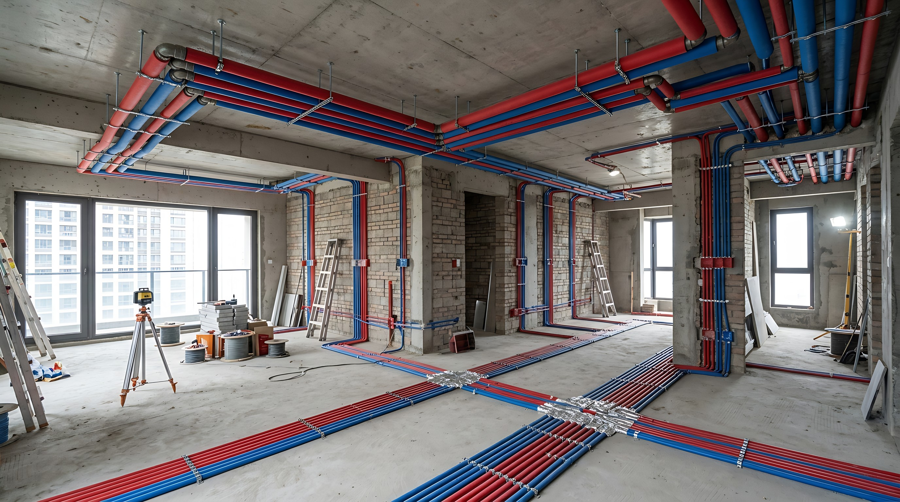
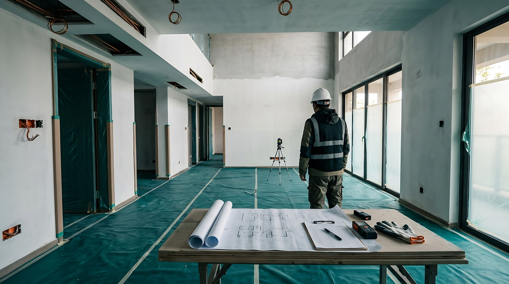
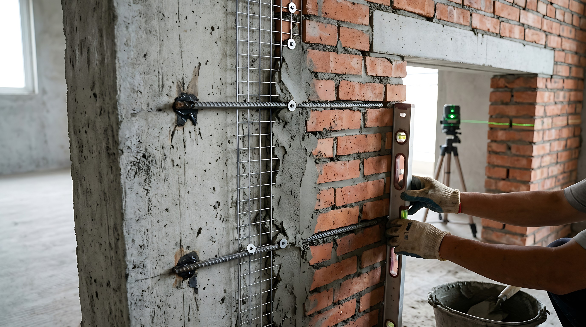
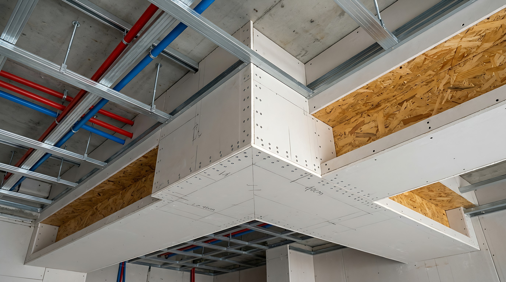
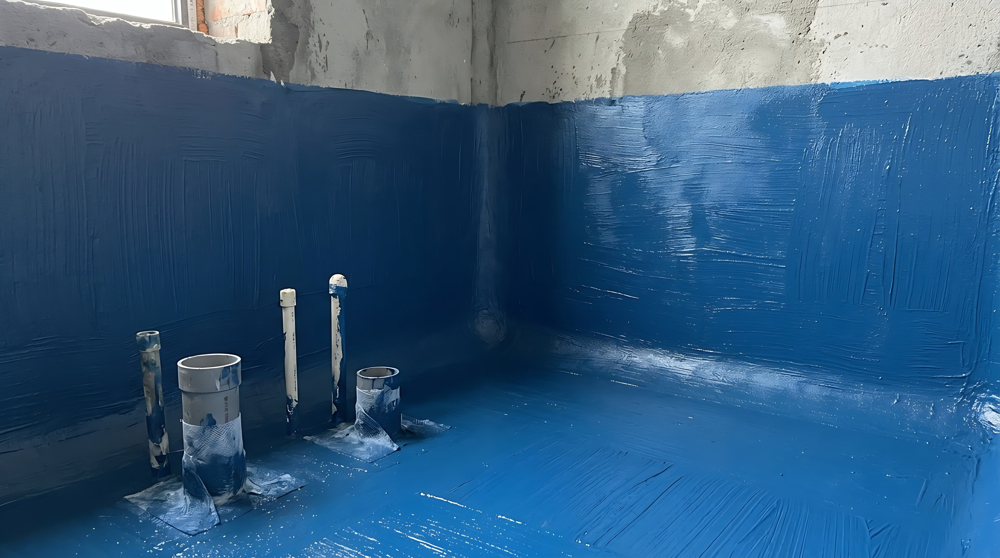
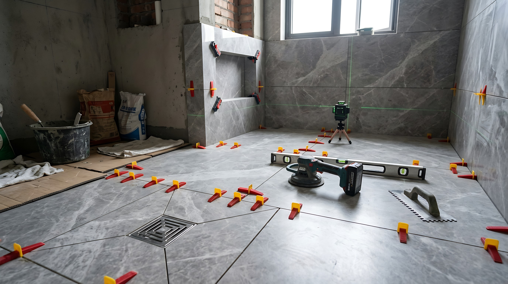
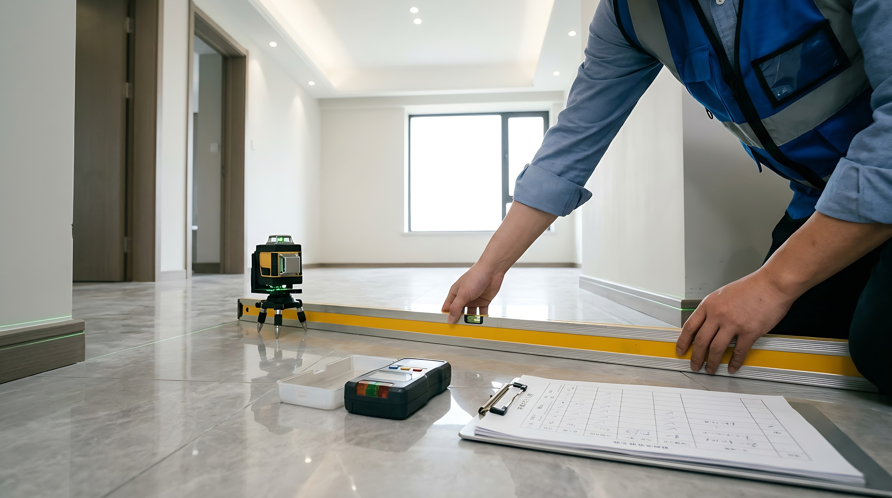

图纸、预算、产品配置与变更边界。

材料有依据施工有顺序节点有记录
01 / QUALITY
品控不是一句承诺，而是一组可执行动作。
施工前确认图纸、点位、材料和现场条件；施工中按工序检查基层、连接、坡度和完成面；进入下一阶段前完成节点确认。
品牌、型号、产地、规格与适用范围，以项目选配表、合同约定和进场资料为准。现场做法根据房屋条件与专项方案落地。
材料名称、型号、规格与包装资料。
隐蔽工程先检查，确认后再覆盖。
节点照片、检测结果与问题整改。
02 / PROCESS
八个阶段，沿真实施工顺序展开。
选择任一阶段，查看施工目的、重点做法和客户确认内容。

01 / 08STAGE 01
开工交底与成品保护
先把边界说清楚，再开始施工。
- 01
核对原始结构、门窗和既有设施状态
- 02
结合确认图纸复核水电点位与完成面关系
- 03
入户门、公共通道、门窗及保留设施分类保护
- 项目图纸与配置清单版本一致
- 现场问题、变更内容与责任边界形成记录
- 保护范围清楚，运输和施工通道可用

02 / 08STAGE 02
拆改与砌筑
结构安全和基层稳定，是后续完成面的起点。
- 01
拆改范围按图纸和现场条件确认，不触碰受保护结构
- 02
新砌墙体关注植筋、门洞过梁与底部防潮做法
- 03
新旧墙交接按基层条件进行加强，降低开裂风险
- 拆改边界与现场一致
- 墙体垂直、门洞尺寸满足后续安装条件
- 隐蔽加强部位在覆盖前留存记录
03 / 08
STAGE 03
水电隐蔽工程
把未来检修、安全使用和设备适配放在前面。
- 01
冷热水与强弱电按确认点位组织走向，转弯和固定便于维护
- 02
给水连接完成后按项目要求进行压力测试
- 03
强弱电交叉、回路分组、线盒和端口按图纸检查
- 材料品牌、规格与预算配置一致
- 管线固定、连接和保护符合对应产品施工要求
- 测试结果和管线走向完成记录后再封闭

04 / 08STAGE 04
吊顶与木作基层
连接稳定、转角防裂和安装基层同时考虑。
- 01
轻钢龙骨规格、间距和连接方式按吊顶方案确认
- 02
转角位置采用整板或针对性加强，接缝预留后续处理条件
- 03
灯槽、风口、轨道灯和门套等位置预设可靠基层
- 龙骨和板材资料与选配一致
- 吊点、连接件和基层位置逐项核对
- 机电检修口、设备位置与吊顶关系无冲突

05 / 08STAGE 05
防水工程
重点看基层、薄弱部位、涂膜连续性和闭水结果。
- 01
基层坚实平整，阴阳角、管根和地漏周边先做加强处理
- 02
墙地面分遍交叉涂刷，覆盖范围按空间使用和方案确定
- 03
防水完成并达到养护要求后进行闭水或对应检测
- 加强部位与涂刷边界清晰
- 表面连续、无明显漏刷和破损
- 测试确认无异常后再进入保护层或铺贴工序

06 / 08STAGE 06
泥瓦与铺贴
平整、牢固、排水和收口共同决定使用体验。
- 01
根据瓷砖规格、基层和使用区域选择适配的粘结体系
- 02
通过定位、找平和振实施工控制缝宽与完成面
- 03
湿区围绕地漏组织坡度，阳角和门槛收口提前确认
- 瓷砖、胶粘材料和填缝材料配置一致
- 铺贴平整度、接缝和空鼓按合同验收依据检查
- 湿区排水方向顺畅，边角与设备接口便于维护
07 / 08
STAGE 07
墙面基层与涂装
完成面是否耐看，取决于被覆盖的基层。
- 01
检查空鼓、裂缝和基层强度后再进入界面处理
- 02
根据基层状况完成找平、接缝或网格加强与阴阳角处理
- 03
底漆、面漆和分色收口按产品说明及样板效果执行
- 基层处理过程可追溯
- 侧光检查平整度、阴阳角和打磨质量
- 颜色、光泽与分色边界按确认样板验收

08 / 08STAGE 08
安装与竣工验收
用功能测试和完成面检查确认交付状态。
- 01
安装阶段复核设备尺寸、接口、开孔和收口关系
- 02
对水、电、排水、门窗、五金等使用功能逐项测试
- 03
完成面、清洁、问题整改和资料移交统一确认
- 检测工具根据项目内容使用，不以目测代替必要测试
- 问题形成清单，完成整改后复核销项
- 交付材料包含配置、使用维护与必要记录
03 / MATERIALS
四国选材，重点是来源与适配。
海鸟材料体系限定中国、德国、意大利、瑞士四个来源方向。国家和品牌不是单独的质量结论，选配时仍需确认具体型号、性能资料、适用部位与施工配套。
管材与线管体系。进场核对品牌、系列、规格、批次及项目配置。
品牌官网石膏板与轻钢龙骨体系。确认板材、龙骨系列和使用区域。
品牌官网工程网线。确认网线类别、规格、执行标准和包装信息。
品牌官网粘结、密封与加固类材料。按具体基层和部位选择产品体系。
品牌官网进场四项核对
- 品牌与项目配置一致
- 型号、规格和使用部位匹配
- 包装、批次与资料可核对
- 施工方法遵循产品说明
MATERIAL ARCHIVE
08 项当前分类主材辅材配置档案
依据手册材料表重组。选择品类查看品牌、规格、标准和材质；手机端点击单项展开。
04 / DELIVERY
客户不需要记住每个术语，只需要知道何时确认什么。
开工前
确认图纸、配置、报价范围、变更规则和现场条件。
材料进场
确认品牌、型号、规格、数量及适用部位。
隐蔽覆盖前
查看测试结果、节点照片及需要整改的项目。
竣工交付
完成使用功能、完成面、整改结果和资料移交确认。
具体产品、工艺参数、验收依据、质保和响应范围，以双方最终签署的合同、设计文件、产品资料及项目验收记录为准。